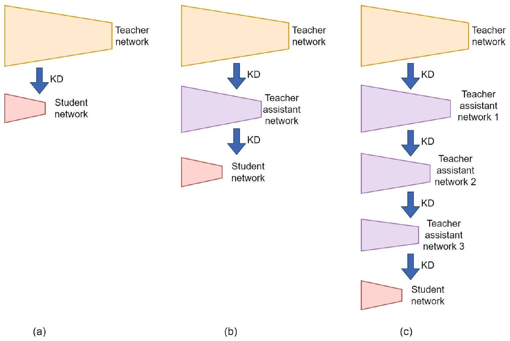
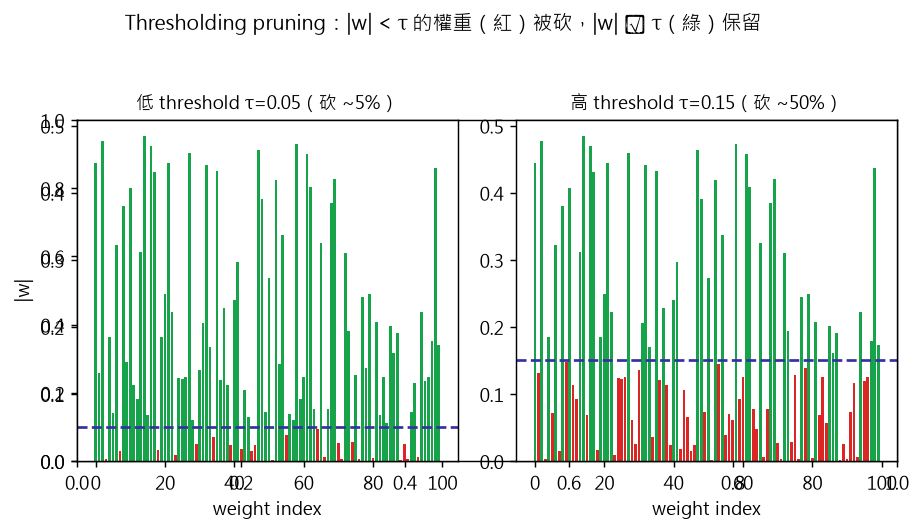
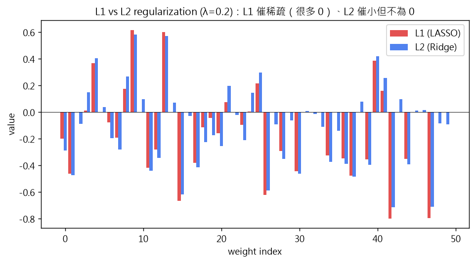
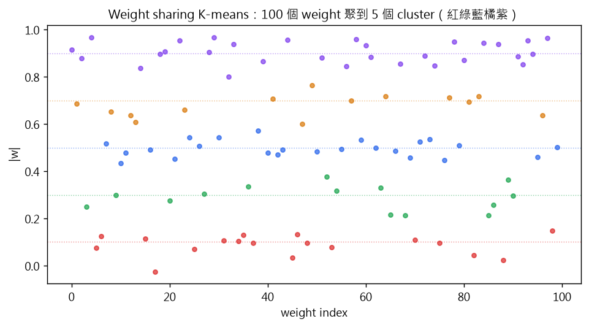
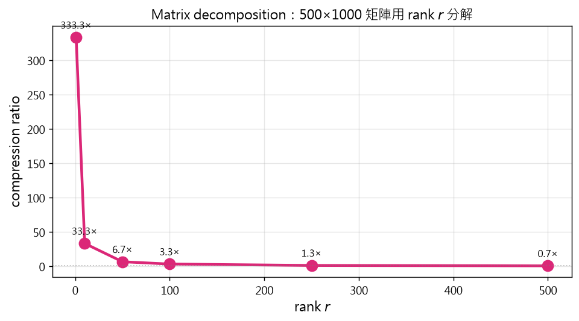
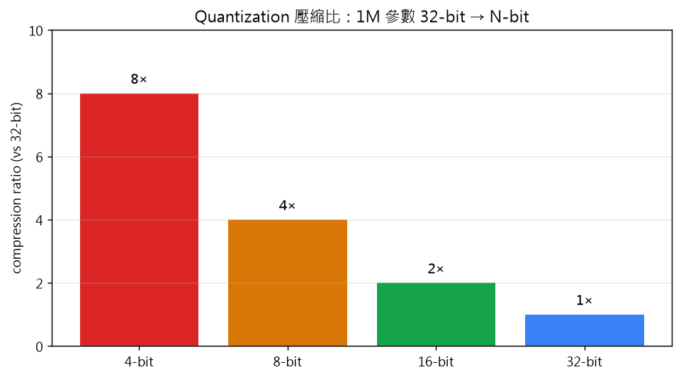
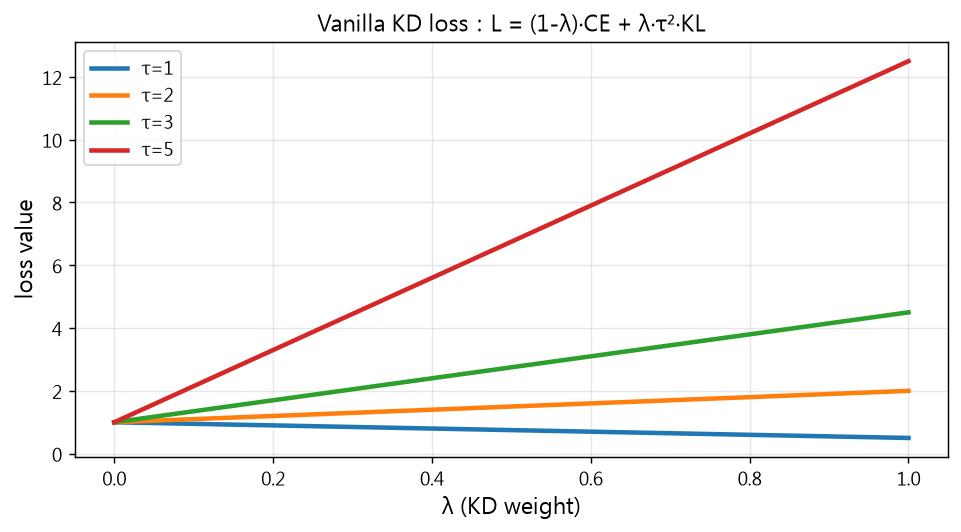
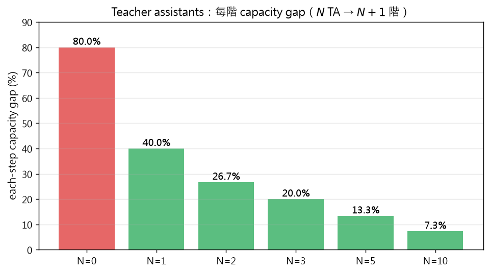
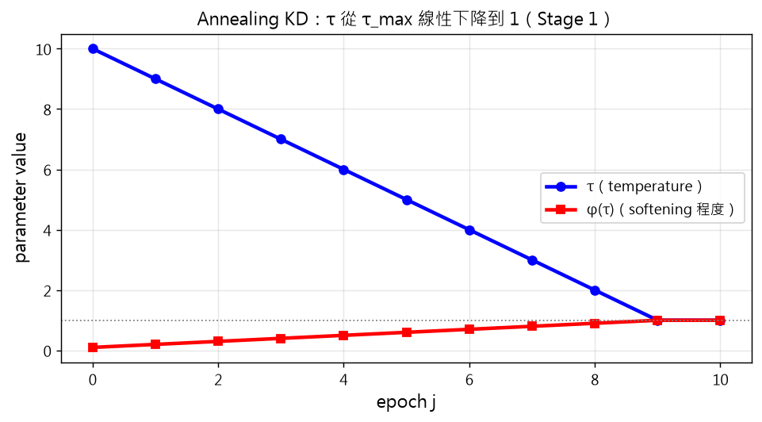

進度 0%
Ch20 — Neural Network Compression & Knowledge Distillation
從 pruning、weight sharing、quantization 到 teacher-student 蒸餾
示意圖解（inline SVG）。
本章談一個實務問題：大型神經網路如何壓縮到邊緣裝置（手機、嵌入式系統）仍保持效能？兩大路線：
- NN compression（§2）：結構上壓縮模型——pruning 砍權重、weight sharing 共享、matrix decomposition 矩陣分解、quantization 量化降精度。
- Knowledge distillation（§3）：大模型（teacher）教小模型（student）——student 不只學 ground-truth label，還模仿 teacher 的「軟標籤」。
本文用一個生動例子：LLM 在手機上的部署。原模型幾十 GB 跑不動，要壓到幾百 MB。手機不能裝 RTX 4090，但能裝 student 模型——「大老師教小學生」的概念。VAE 教的是資料分佈；KD 教的是任務分佈（teacher 的知識）。

示意圖解（inline SVG）。
NN compression 不是單一技術，而是一個演算法家族。四大主要方法：
- Pruning：移除不重要的權重、神經元、通道。結構化（移除整個 filter）vs 非結構化（移除單一權重）。
- Weight sharing：多個權重共用同一值。Hash bucket、GMM 聚類、CNN 循環層。
- Matrix decomposition：把大矩陣分解為小矩陣乘積。SVD、Kronecker decomposition、low-rank factorization。
- Quantization：把 32-bit float 改成 8-bit/4-bit int。減少儲存、可能提效。
四大方法可組合使用：pruning + quantization + weight sharing 可達 50–100× 壓縮率。但有 trade-off：每多一層壓縮，accuracy 通常掉一些。
直覺比喻：壓縮一本書。Pruning = 刪掉不重要的章節；weight sharing = 用同義詞替換；matrix decomposition = 把段落總結成關鍵字；quantization = 把高清圖換成低解析度——四招都能讓書更短，但可能失去細節。
示意圖解（inline SVG）。
Pruning是最早的 NN 壓縮方法（LeCun 1989 Optimal Brain Damage）：移除對 loss 影響小的權重，模型變小、可能也變快（減少運算）。
我打個比方。Pruning 像圖書館淘汰舊書：統計借閱率（權重絕對值），少人借的書（絕對值小的權重）淘汰掉，留下熱門書。淘汰不等於隨便丟——是根據「重要性」決定的。
與 dropout 不同：
- Pruning：永久移除連接（壓縮）。
- Dropout：訓練時暫時隨機關閉連接（regularizer，不是壓縮）。
Pruning 的子分類：
- Thresholding：按 |權重| 閾值砍。
- Regularization：用 L1/L2 鼓勵權重小，再砍小的。
- Sensitivity：算 loss 對權重的導數（Hessian），砍敏感度低的。
- Search-based：GA / PSO / RL 找最佳子網路。
- Sub-network：找 Lottery Ticket（kp 17 不在此章）——初始化的子網路可達完整效能。
生物學類比：人腦也會刪除不重要的記憶（synaptic pruning）——這不是退化，是優化。
2.1.1
Thresholding Pruning：按絕對值砍

示意圖解：請對照 B0 準則（遮住文字仍能看出因果/反直覺）。
🤖 AI 生圖可用：重繪此示意圖的提示詞（結構化）
WHAT: 1×2 子圖，皆 100 條 bar 模擬權重。左標題「低 threshold τ=0.05（砍 ~5%）」，右標題「高 threshold τ=0.15（砍 ~50%）」。紅色 = 被砍，綠色 = 保留。藍色虛線 = threshold 線。
WHY: 凸顯 threshold 越高砍越多權重、sparsity 越高。
MUST show: (1) 100 個 bar（不同高度）；(2) 紅綠分色；(3) 水平 threshold 虛線；(4) 左右對比。
AVOID: 不要用柱狀圖的 random 順序掩蓋效果；不要省略 threshold 線。
STYLE: clean scientific plot, white background, 整體標題「Thresholding pruning：|w| < τ 的權重（紅）被砍，|w| ≥ τ（綠）保留」。
互動 demo：Thresholding pruning：絕對值 < τ 砍掉
最簡單的剪枝：給定閾值 $\tau$，所有 $|w|<\tau$ 的權重直接歸零。
稀疏度 sparsity = 剪枝數 / 總數。
怎麼操作：拖動 $\tau$ 滑桿（0–0.5）改變剪枝閾值。
觀察什麼：100 個權重中，紅色 = 被剪枝（< $\tau$），綠色 = 保留；橙色虛線標示當前 $\tau$ 位置。
正確基準：$\tau=0.10$：剪掉約 30 個，sparsity ≈ 30%；$\tau=0.30$：剪掉約 70 個，sparsity ≈ 70%。
Thresholding pruning是最簡單的 pruning 策略：設一個閾值，把 |權重| < 閾值的權重砍掉。
公式：
$$w_{ij}^{\text{new}} = \begin{cases} w_{ij} & \text{if } |w_{ij}| \geq \tau \\ 0 & \text{if } |w_{ij}| < \tau \end{cases}$$
其中 $\tau$ 是閾值（per-layer 或 global）。可設定目標稀疏度，自動算 $\tau$（取 |w| 分布的 70% 分位數 → 砍 70% 最小權重）。
我打個比方。Thresholding 像用篩子過濾米粒：篩子孔徑 = $\tau$。小於孔徑的米（不重要權重）掉下去，留下大粒米（重要權重）。孔徑 = 砍掉 90% → 嚴格；孔徑小 → 寬鬆。
請你動筆算算想想：
- 若模型 1M 權重、目標稀疏度 70%，閾值 $\tau$ 怎麼選？
- 若用global threshold（整個網路一個 $\tau$）vs per-layer threshold（每層一個）會怎樣？
（答案：1. 從所有 |w| 排序，取第 30 百分位數。2. Global 簡單但各層不均勻；per-layer 平衡但需校準。Per-layer 通常表現更好。）
2.1.2
Regularization Pruning：L1/L2 鼓勵稀疏

示意圖解：請對照 B0 準則（遮住文字仍能看出因果/反直覺）。
🤖 AI 生圖可用：重繪此示意圖的提示詞（結構化）
WHAT: 50 對條形圖，紅色（L1）+ 藍色（L2）並列顯示 50 個 weight 經兩種正則後的收縮結果。λ=0.2。
WHY: 凸顯 L1 催稀疏（多 0）、L2 催小但不為 0 的差異。
MUST show: (1) L1（紅）與 L2（藍）並列；(2) L1 的 bar 多為 0（稀疏）；(3) L2 的 bar 普遍小但不為 0；(4) λ 標籤。
AVOID: 不要把 L1/L2 疊合、不能省略對比。
STYLE: clean scientific plot, white background, 標題「L1 vs L2 regularization (λ=0.2)：L1 催稀疏、L2 催小但不為 0」。
互動 demo：Regularization pruning：L1 sparsity vs L2 shrinkage
損失加正則項：$L = L_{\text{task}} + \lambda \cdot (\alpha \cdot L_1 + (1-\alpha) \cdot L_2)$。
L1 誘導稀疏（soft-threshold），L2 只收縮不歸零。
怎麼操作：拖動 $\lambda$ 與 L1_ratio 滑桿（0=純 L2, 1=純 L1）。
觀察什麼：10 個權重中，紅條 = L1 結果，藍條 = L2 結果。L1 把小權重直接歸零，L2 等比例縮小。
正確基準：$\lambda=0.5, \text{ratio}=0.5$：L1 sparsity ≈ 20%, L2 sparsity ≈ 0%；$\text{ratio}=1$：L1 sparsity > L2 sparsity。
Regularization pruning用 L1/L2 norm 鼓勵權重變小，再砍掉小的。與 thresholding 不同：訓練時就鼓勵稀疏，不是訓練完才砍。
兩種正則：
- L2（weight decay）：$L_\text{reg} = \lambda\sum w^2$。鼓勵權重小但不一定為 0。
- L1（LASSO）：$L_\text{reg} = \lambda\sum |w|$。鼓勵權重為 0——天然稀疏。
直覺比喻：L1 像只給有限的零錢（大部分人會用整數、不找零），讓開銷自動聚集在少數大額；L2 像鼓勵花得少但可以無限小（找零找不停）。
請你動筆算算想想：
- 為什麼 L1 鼓勵稀疏、L2 不會？
- 權重衰減（weight decay）對應哪個？
（答案：1. L1 在 0 點不可微（sub-gradient），迫使權重精確為 0；L2 在 0 點梯度為 0，權重可無限接近 0 而非真正為 0。2. Weight decay 是 L2 形式——$L_\text{reg} = \lambda\sum w^2$。）
2.1.3
Sensitivity-based Pruning：loss 對權重的靈敏度
示意圖解（inline SVG）。
Sensitivity-based pruning 計算 loss 對權重的敏感度：移除敏感度低的權重（不影響 loss）。
計算方式：
- 一階導數：$\frac{\partial L}{\partial w}$（梯度大 → 重要）。
- 二階導數（Hessian）：更精準但昂貴。Optimal Brain Damage（LeCun 1989）首創。Optimal Brain Surgeon（Hassibi 1993）改進版。
- Variance：敏感度變化小 → 該權重影響穩定 → 可移除。
直覺比喻：算每本書的借閱紀錄變化。一本書若借閱量每月都低（變化小），代表穩定沒人要看——淘汰掉；若波動大（有人借有人還），代表重要——保留。變化小 = 影響穩定 = 不重要 = 可刪。
2.2
Weight Sharing：多權重共用值

示意圖解：請對照 B0 準則（遮住文字仍能看出因果/反直覺）。
🤖 AI 生圖可用：重繪此示意圖的提示詞（結構化）
WHAT: 100 個散點（按 weight index），每個點依所屬 cluster 著色。共 5 個 cluster（紅綠藍橘紫），每個 cluster 用水平虛線標中心。
WHY: 凸顯 K-means weight sharing：每個 weight 被指派到最近中心，共享該中心值。
MUST show: (1) 100 個散點著色（5 色）；(2) 5 個水平虛線標 cluster 中心；(3) x 軸為 weight index。
AVOID: 不要省略中心線、不能混淆顏色。
STYLE: clean scientific plot, white background, 標題「Weight sharing K-means：100 個 weight 聚到 5 個 cluster」。
互動 demo：Weight sharing：K-means clustering 壓縮
把所有權重聚成 $K$ 個 cluster，每個 cluster 用中心值表示。
只需存 $K$ 個中心值 + 每個權重 $\log_2 K$ 位元存 cluster index。
怎麼操作：拖動 $K$ 滑桿（2–256）改變 cluster 數。
觀察什麼：100 個權重點依 $K$ 個 cluster 中心（垂直彩色線）分組；$K$ 越大保留越多細節。
正確基準：$K=2$：壓縮比 = 100/2 = 50×；$K=32$：壓縮比 ≈ 3.1×；$K=100$：退化成無壓縮。
Weight sharing讓多個權重共用同一值：相同值視為「同一個參數」，只存一份。CNN kernel filter、跨層權重都可共享。
三種實作：
- GMM 聚類：用 Gaussian mixture model 把權重分到 K 個 cluster，每個 cluster 共享一個代表值。
- Hash bucket：用 hash function 將權重分桶（Chen 2015）。
- CNN 循環層：輸出當下一層輸入（Recurrent CNN），少量層當大量層用。
壓縮率：100M 權重聚成 256 cluster → 只存 256 個值 + 100M 個 8-bit index（~14× 壓縮）。
直覺比喻：公司制服——全公司 1000 人不需要 1000 件不同尺寸，只要 S/M/L/XL 四個尺寸就夠。每人按身材領對應尺寸（=hash bucket），整體儲存節省。
2.3
Matrix Decomposition：低秩分解

示意圖解：請對照 B0 準則（遮住文字仍能看出因果/反直覺）。
🤖 AI 生圖可用：重繪此示意圖的提示詞（結構化）
WHAT: 折線圖 x 軸 rank r（1–500），y 軸 compression ratio。6 個圓點標 r=1, 10, 50, 100, 250, 500。值從 6.7× 到 500×。
WHY: 凸顯矩陣分解隨 rank 變化的壓縮率——rank 小 → 壓縮大但損失多。
MUST show: (1) 6 個 r 點；(2) compression ratio 數值標註；(3) rank=500 時壓縮 = 1×（無壓縮）。
AVOID: 不要用 log y 軸、不能省略 r=500 的 1× 點。
STYLE: clean scientific plot, white background, 標題「Matrix decomposition：500×1000 矩陣用 rank r 分解」。
互動 demo：Matrix decomposition：rank-r SVD 節省參數
$W \in \mathbb{R}^{M \times N}$ 分解為 $U \in \mathbb{R}^{M \times r}$ 與 $V \in \mathbb{R}^{r \times N}$。
新參數 = $r(M+N)$ vs 原始 $MN$。
怎麼操作：拖動 $r$ 滑桿（1–500）改變 rank。
觀察什麼：紅條 = 原始 $500 \times 1000 = 500{,}000$ 參數；綠條 = $r \times 1500$ 參數；藍底顯示節省量。
正確基準：$r=10$：saved = $500{,}000 - 15{,}000 = 485{,}000$（97%）；$r=100$：saved = $350{,}000$（70%）。
Matrix decomposition把大矩陣 $W \in \mathbb{R}^{m \times n}$ 分解為小矩陣乘積 $W \approx UV^\top$（rank $r$），其中 $U \in \mathbb{R}^{m \times r}$、$V \in \mathbb{R}^{n \times r}$、$r \ll \min(m, n)$。
壓縮率：原 $W$ 有 $mn$ 個參數；分解後 $U + V$ 共 $r(m+n)$ 個參數。節省 $(mn - r(m+n))$ 個。
常用方法：
- SVD：奇異值分解，最優低秩近似。
- Kronecker decomposition：把 $W$ 分解為兩個小矩陣的 Kronecker 積。
- Block-term tensor：高階張量分解。
請你動筆算算：
設 $W \in \mathbb{R}^{500 \times 1000}$，用 rank $r=50$ 分解：
- 原參數量？
- 分解後參數量？
- 壓縮比？
（答案：1. $500 \times 1000 = 500{,}000$。2. $r(m+n) = 50 \times 1500 = 75{,}000$。3. $500{,}000 / 75{,}000 \approx 6.67\times$ 壓縮。）
直覺比喻：把 500×1000 表格壓縮成 50 個關鍵指標——每個指標對應一組原表格列的權重（=U）+ 對應行的權重（=V）。壓縮比隨 rank 變化。

示意圖解：請對照 B0 準則（遮住文字仍能看出因果/反直覺）。
🤖 AI 生圖可用：重繪此示意圖的提示詞（結構化）
WHAT: 4 條柱狀圖：4-bit、8-bit、16-bit、32-bit 對應的 compression ratio。4-bit: 8×、8-bit: 4×、16-bit: 2×、32-bit: 1×。
WHY: 凸顯量化從 4-bit 到 32-bit 壓縮比遞減——bit 越低壓縮越大但精度越低。
MUST show: (1) 4 個 bar；(2) compression 數值標註在 bar 上方；(3) x 軸是 bit-width。
AVOID: 不要省略 32-bit（1× 對照）、不能混淆 bit 與壓縮比。
STYLE: clean scientific plot, white background, 標題「Quantization 壓縮比：1M 參數 32-bit → N-bit」。
互動 demo：Quantization：1M 參數從 32-bit 量化
每個參數從 32-bit float 量化為 $b$-bit 整數。
記憶體 = $N \times b / 8$ bytes，壓縮比 = $32/b$。
怎麼操作：拖動 $b$ 滑桿（1–32）改變量化位元。
觀察什麼：藍條 = 32-bit（4 MB），綠條 = $b$-bit；$b$ 越小綠條越短，記憶體越省。
正確基準：$b=8$：壓縮 4×，1M params = 1 MB；$b=4$：壓縮 8×，0.5 MB；$b=2$：壓縮 16×，0.25 MB。
Quantization把 32-bit float 改成 8-bit/4-bit int，儲存直接 4–8× 壓縮。可能反而提升效能（regularization 效果）。
直覺比喻：照片解析度。32-bit float = 4K 解析度照片（細節完整）；8-bit int = 480p（細節丟失但仍可辨識）。對 NN 而言，4K 細節常常是 noise，480p 就夠了。
請你動筆算算：
- 1M 參數從 32-bit 改成 8-bit，記憶體縮減比？
- 改成 4-bit 呢？
- 若再做 weight sharing（256 cluster），還能再省多少？
（答案：1. $32/8 = 4\times$ 壓縮。2. $32/4 = 8\times$ 壓縮。3. 256 cluster 用 8-bit index：$32/8 = 4\times$ → 8-bit × 4 = 32× 總壓縮。）
進階：混合精度——敏感層（如第一/最後 conv）保持 32-bit、其他層降精度，平衡速度與精度。
3
Knowledge Distillation 總覽
示意圖解（inline SVG）。
Knowledge Distillation (KD, Hinton 2015)：大模型（teacher）教小模型（student），讓 student 學會 teacher 的知識而成為 teacher 的「壓縮版」。
直覺比喻：師徒制。師傅（teacher）有幾十年功力（百億參數、頂尖 accuracy），徒弟（student）只能練幾成功力（百萬參數、行動裝置）。但師傅不只是教徒弟「什麼是對的」（hard label），還教「什麼比較像、什麼比較不像」（soft label）——例如「貓跟老虎比較像，跟車比較不像」。徒弟學到「相似度結構」而不只是答案，所以能泛化得更好。
KD vs AE：
- AE：學資料分佈（$P(x)$）。
- KD：學任務分佈（$P(y\mid x)$）。
章節 5 大問題：
- Vanilla KD 公式。
- Capacity gap（小 student 學不來大 teacher）。
- Checkpoint search（用 teacher 的哪個版本）。
- Intermediate layer matching（不只是最後一層）。
- Loss 權重（每筆資料的 $\lambda$ 應不同嗎）。
3.1
Vanilla KD：teacher → student 軟標籤

示意圖解：請對照 B0 準則（遮住文字仍能看出因果/反直覺）。
🤖 AI 生圖可用：重繪此示意圖的提示詞（結構化）
WHAT: 4 條曲線（τ=1, 2, 3, 5）loss vs λ（0–1）。CE=1 假設，KL=0.5 假設。x 軸是 KD weight λ，y 軸是 loss 值。τ 越大 loss 越快上升。
WHY: 凸顯 KD loss 隨 τ 變化：τ² 因子放大 KL、τ=1 時 KD 退化成 KL。
MUST show: (1) 4 條曲線不同 τ；(2) λ=0 是 CE=1；(3) λ=1 隨 τ 變化的 KD 值。
AVOID: 不要省略 τ=1 對照線、不能混淆軸。
STYLE: clean scientific plot, white background, 標題「Vanilla KD loss：L = (1-λ)·CE + λ·τ²·KL」。
互動 demo：Vanilla KD：CE + KD loss 加權
$\mathcal{L} = (1-\lambda) \cdot \mathcal{L}_{\text{CE}} + \lambda \cdot \tau^2 \cdot D_{KL}(\sigma(z_t/\tau) \| \sigma(z_s/\tau))$
$\lambda$ 控制模仿 teacher 的強度，$\tau$ 軟化 logits。
怎麼操作：拖動 $\lambda$ 與 $\tau$ 滑桿。
觀察什麼：藍線 = $(1-\lambda) \cdot$CE，紅線 = $\lambda \cdot \tau^2 \cdot$KL，綠虛線 = 總 loss。$\lambda$ 變大時 KD 比重上升。
正確基準：$\lambda=0.5, \tau=4$：CE、KD 各半，總 loss = 中間值；$\tau=1$：KL 變陡，KD 訊號強。
Vanilla KD（Hinton 2015）：student 同時學hard label（ground truth）和soft label（teacher 的 softened 輸出）。
Loss 公式（式 1）：
$$\mathcal{L} = (1-\lambda) \mathcal{L}_{\mathrm{CE}} + \lambda \mathcal{L}_{\mathrm{KD}}$$
其中 $\lambda$ 是混合權重（CE 與 KD 的比例）。
KD loss（式 3）：用 temperature-softened softmax 算 KL divergence：
$$\mathcal{L}_{\mathrm{KD}} = \tau^2 \cdot D_{\mathrm{KL}}(\sigma(f_t/\tau) \| \sigma(f_s/\tau))$$
其中 $\sigma(z_i/\tau) = e^{z_i/\tau}/\sum_j e^{z_j/\tau}$ 是「軟化」的 softmax。$\tau$ 大 → 軟化更強 → teacher 的「暗知識」更明顯。
為什麼乘 $\tau^2$？梯度量級補償：$\tau$ 大時 softmax 較平滑、$\partial\sigma/\partial z$ 變小，乘 $\tau^2$ 讓 loss 量級不依賴 $\tau$。
請你動筆算算想想：
- 若 $\tau=1$，KD 退化成什麼？
- $\tau$ 變大會怎樣？
（答案：1. $\tau=1$：softmax 退化成 normal，KD = 標準 KL。2. $\tau$ 大：teacher 機率更「均勻」（soft label 揭露類間相似度），學生學到暗知識。）
3.2
Capacity Gap Problem
示意圖解（inline SVG）。
當 student 比 teacher 小太多時，KD 變難：student 容量不足以吸收 teacher 的知識。
直覺比喻：幼兒園小孩聽大學教授講量子力學。教授講得再深入，小孩也吸收不了——不是教授的問題，是接收端容量不足。
理論依據（式 4）：PAC learning 框架下，KD 有效需要：
$$\mathcal{O}((|\mathcal{F}_s|_c + |\mathcal{F}_t|_c)/n^\alpha) + \epsilon_t + \epsilon_l \le \mathcal{O}(|\mathcal{F}_s|_c/\sqrt{n}) + \epsilon_s$$
若 $|\mathcal{F}_s|_c \ll |\mathcal{F}_t|_c$（student 容量 << teacher 容量），左邊 >> 右邊，KD 失效。
解法：
- Teacher assistants（kp 13）：中間層次 TA 橋接大 teacher、小 student。
- Annealing KD（kp 14）：先寬鬆學再嚴格。
3.2.3
Teacher Assistants：階層式 KD

示意圖解：請對照 B0 準則（遮住文字仍能看出因果/反直覺）。
🤖 AI 生圖可用：重繪此示意圖的提示詞（結構化）
WHAT: 6 條 bar：N=0（直接 teacher→student，gap=80% 紅色）、N=1, 2, 3, 5, 10（TA 階層，gap 逐步遞減綠色）。y 軸是每階 capacity gap（%）。
WHY: 凸顯 TA 數量越多，每階 capacity gap 越小，KD 越易學。
MUST show: (1) 6 個 bar；(2) gap% 數值標註；(3) N=0 紅色、N≥1 綠色。
AVOID: 不要省略 N=0 對照、不能混淆色彩。
STYLE: clean scientific plot, white background, 標題「Teacher assistants：每階 capacity gap（N TA → N+1 階）」。
互動 demo：Teacher assistants：N 個中間 TA 縮小 capacity gap
Teacher 太強、Student 太弱會 capacity gap。
插入 $N$ 個 TA，capacity 等距遞減：$C_{TA_i} = C_T - i \cdot (C_T - C_S)/(N+1)$。
怎麼操作：拖動 $N_{TA}$ 滑桿（0–5）改變中間 TA 數量。
觀察什麼：紅柱 = Teacher，綠柱 = Student，橘柱 = TA；$N$ 越大，capacity 階梯越細。
正確基準：$N=0$：gap = 0.9（一步大跳）；$N=3$：每步 gap = 0.225（漸進）；$N=5$：每步 gap = 0.15。
當 student 太弱，直接從大 teacher 學會失敗。解法：插一連串 teacher assistants（TA）做橋接，漸進式壓縮。
直覺比喻：中醫師徒制。國醫大師 → 主任醫師 → 主治醫師 → 住院醫師。每層只教下一層能消化的量，不是大師直接教菜鳥（會失敗），而是層層遞進。
兩種架構：
- 單 TA：teacher → TA → student（圖 1b）。
- TA 金字塔：teacher → TA1 → TA2 → ... → student（圖 1c）。
數學上：每層 KD loss 都用相同形式 $\mathcal{L} = (1-\lambda)\mathcal{L}_{CE} + \lambda\mathcal{L}_{KD}$，但 capacity 差距小，更容易學。
3.2.4
Annealing KD：temperature decay

示意圖解：請對照 B0 準則（遮住文字仍能看出因果/反直覺）。
🤖 AI 生圖可用：重繪此示意圖的提示詞（結構化）
WHAT: 兩條曲線：藍色 τ（從 τ_max=10 線性降到 1），紅色 φ(τ)（從 1/τ_max 升到 1）。x 軸 epoch j (0–10)。
WHY: 凸顯 annealing：τ 隨時間下降、φ(τ) 隨時間上升 → 學生從寬鬆學到嚴格。
MUST show: (1) 兩條曲線反方向；(2) 0 軸水平線；(3) 圖例標 τ 與 φ。
AVOID: 不要把兩條線同方向、不能省略 0 軸。
STYLE: clean scientific plot, white background, 標題「Annealing KD：τ 從 τ_max 線性下降到 1（Stage 1）」。
互動 demo：Annealing KD：τ 隨 epoch 從 τ_max 線性下降到 1
$\tau_j = \max(1, \tau_{\max} - j)$，$\phi(\tau_j) = 1 - (\tau_j - 1)/\tau_{\max}$。
前期 $\tau$ 大、模仿分布；後期 $\tau=1$、學 hard label。
怎麼操作：拖動當前 epoch $j$ 與 $\tau_{\max}$ 滑桿。
觀察什麼：紅線 = $\tau_j$ 從 $\tau_{\max}$ 線性下降到 1；藍線 = $\phi(\tau_j)$ 從 0 升到 1。
正確基準：$j=0, \tau_{\max}=10$：$\tau_0 = 10$, $\phi=0$；$j=5$：$\tau_5 = 5$, $\phi=0.5$；$j=10$：$\tau_{10} = 1$, $\phi=1$。
Annealing KD：從寬鬆學起、逐漸變嚴格。類比模擬退火（simulated annealing）——一開始接受差解，後來只接受好解。
公式（式 7）：MSE 而非 KL：
$$\mathcal{L}_{\mathrm{KD}}^{\text{annealing}} = \| f_s(\boldsymbol{x}) - \phi(\tau) f_t(\boldsymbol{x}) \|_2^2$$
其中 $\phi(\tau) = 1 - (\tau-1)/\tau_{\max}$，把 teacher 的 logits 按 $\tau$ 線性縮小。$\tau=1$（最後期）→ $\phi=1$（match 原 logits）；$\tau=\tau_{\max}$（最早期）→ $\phi$ 最小（match 大幅縮小的 logits）。
兩階段：
- Stage 1：$1 \le \tau \le \tau_{\max}$，anneal 學 soft label。
- Stage 2：$\tau=1$，fine-tune 學 hard label。
直覺比喻：學鋼琴從慢速開始。先彈簡化版（$\tau$ 大）讓手指熟悉節奏，後彈原速（$\tau$ 小）。直接原速會亂。
3.3
Checkpoint Search Problem
示意圖解（inline SVG）。
Checkpoint search problem：用 teacher 的哪個 checkpoint 做 KD？直覺：用 val error 最小的最終版本。但實驗發現：早期 checkpoint 反而是更好的 teacher！
直覺比喻：教孩子數學。用頂級數學家（過度擬合了研究問題）教，孩子可能只學到奇怪的專用技巧。反而是「教得清楚、不過度擬合的中階老師」讓孩子學到通用基礎。
解法：
- Early stopping teacher：teacher 不訓練到收斂，提早停止。
- Co-training（Pro-KD, Co-Distill）：teacher 與 student 同步訓練，動態調整。
- Early epoch noisy label detection：訓練初 loss 大的標籤視為 noisy，重新標註。
示意圖解（inline SVG）。
NN 壓縮 + 知識蒸餾是 2025 年部署大型模型的關鍵技術。尤其 LLM 時代：DistilBERT、TinyBERT、MobileBERT 等都是 KD 出來的小模型，跑在邊緣裝置。
三大類結論：
- 結構壓縮（§2）：pruning + quantization + matrix decomposition + weight sharing → 結構性簡化模型。
- 資訊蒸餾（§3）：teacher → student 知識轉移，保留 task 性能。
- 現代地位：LLM 時代「小模型 + 大模型知識」是部署關鍵。DistilBERT、TinyBERT、MobileBERT 已商業化。
給實作者三個建議：
- 先量測 bottleneck：是 storage 限制？latency 限制？選對應方法（quantization 省記憶、pruning 省運算）。
- 方法可疊加：pruning + KD + quantization 可達 50–100× 壓縮。
- 中間層也蒸餾：Universal-KD、Patient-KD 等中間層對齊可進一步提升。
教授祕笈：全章地圖 — NN 壓縮 + 知識蒸餾
同學，本章解決大模型跑不到邊緣裝置的問題（手機、嵌入式系統）。兩大路線：
我打個比方。LLM 跑在手機上像把大卡車開進小巷——幾十 GB 的模型塞不進幾 GB 的手機。NN compression 像把卡車拆成腳踏車（pruning 砍、quantization 降精度、matrix decomp 矩陣分解）；KD 像讓機車師傅教你開腳踏車（大模型教小模型）。VAE 學資料分佈；KD 學任務分佈（teacher 的 soft label）。
整章 5 個里程碑：
-
§2 NN compression：pruning（砍不重要的）、weight sharing（共用值）、matrix decomp（低秩分解）、quantization（降精度）。
-
§3.1 Vanilla KD：teacher → student，soft label（KL）+ hard label（CE）。
-
§3.2 Capacity gap：student 太小學不動 → TA 階層 + annealing。
-
§3.3 Checkpoint search：用 teacher 哪個版本？early checkpoint 反而最好。
-
§3.4+ 中間層 / 權重 / data-free / BERT：進階應用。
請你動筆算算想想：
-
為什麼大模型需要壓縮？
-
KD 為什麼不只學 hard label？
（答案：1. 邊緣裝置記憶/算力/電池有限；幾十 GB 跑不動。2. Soft label 揭露類間相似度——不只「是貓」，還有「貓像老虎不像車」的暗知識，泛化更好。）
常見誤解：
口訣：LLM 時代的部署關鍵；結構壓縮 + 知識蒸餾 = 小模型 + 大智慧。
掛勾：詳見 kp 2（四大壓縮方法）、kp 10（KD 概觀）、kp 16（現代地位 = LLM 部署關鍵）。
教授祕笈：NN Compression 總覽
同學，NN compression 是一個演算法家族，不是單一技術。四大方法各有取捨，常組合使用達 50–100× 壓縮。
我打個比方。壓縮一本書有四招：刪除章節（pruning）、用同義詞替換（weight sharing）、把段落總結成關鍵字（matrix decomp）、改低解析度印刷（quantization）——四招都能讓書更短，但可能失去細節。
四大方法：
-
Pruning：移除不重要權重/神經元/通道。結構化 vs 非結構化。
-
Weight sharing：多權重共用一個值。GMM 聚類、hash bucket。
-
Matrix decomposition：$W \approx UV^\top$（低秩）。SVD、Kronecker。
-
Quantization：32-bit float → 8/4-bit int。可能提升效能（正則效果）。
請你動筆算算想想：
-
哪個方法省 memory？哪個省 latency？可疊加嗎？
-
pruning 100M → 30M（砍 70%）後再做 4-bit quant，總記憶體？
（答案：1. Quantization 省 memory 最直接；pruning 省 FLOPs（latency）。可疊加（如 MobileBERT = pruning + KD + 4-bit quant）。2. $100M \times 4 = 50M$ bytes（vs 原 $400M$ bytes = 8× 壓縮）。）
常見誤解：
口訣：Pruning 砍結構、sharing 共用值、decomp 低秩近似、quant 降精度；可疊加達 50–100×。
掛勾：詳見 kp 3（pruning 細節）、kp 7（weight sharing）、kp 8（matrix decomp）、kp 9（quantization）。
教授祕笈：Pruning：移除不重要權重
同學，pruning是最早的 NN 壓縮方法（LeCun 1989 OBD）：移除對 loss 影響小的權重，模型變小、可能也變快。
我打個比方。Pruning 像圖書館淘汰舊書：統計借閱率（權重絕對值），少人借的書（絕對值小的權重）淘汰掉——不是隨便丟，是根據「重要性」決定的。
與 dropout 不同：
生物類比：人腦也會刪除不重要的記憶（synaptic pruning）——不是退化，是優化。
Pruning 的 5 種子策略：
-
Thresholding：按 |w| 閾值砍。
-
Regularization：L1/L2 鼓勵權重小，再砍小的。
-
Sensitivity：算 loss 對權重的導數（Hessian），砍敏感度低的。
-
Search-based：GA / PSO / RL 找最佳子網路。
-
Sub-network：找 Lottery Ticket（恰當初始化的子網路 = 完整效能）。
請你動筆算算想想：
-
Pruning 與 Dropout 的關鍵差異？
-
為什麼剪枝後有時 accuracy 反而提升？
（答案：1. Pruning 永久（壓縮）；Dropout 暫時（正則化）。2. Lottery ticket 假說：恰當的剪枝移除冗餘連接，模型變小且泛化提升。）
常見誤解：
口訣：Permanent remove（永久移除）；按重要性砍（不是隨機）；生物學類比 synaptic pruning。
掛勾：詳見 kp 4（thresholding 細節）、kp 5（regularization）、kp 6（sensitivity）、kp 17、18（sub-network 與 lottery）。
教授祕笈：Thresholding Pruning
同學，thresholding pruning最簡單：設閾值 τ，砍 |w| < τ 的權重。
我打個比方。Thresholding 像用篩子過濾米粒：篩子孔徑 = τ。小於孔徑的米（不重要權重）掉下去，留下大粒米（重要權重）。
兩種 τ 設定：
τ 決定了稀疏度：
請你動筆算算想想：
-
若目標 sparsity=70%，τ 怎麼選？
-
為什麼 per-layer 通常比 global 好？
（答案：1. 取所有 |w| 排序，找 30 百分位數（即「砍掉最小的 70%」）。2. 不同層的權重分布差異大（早期層 vs 後期層），per-layer τ 對每層獨立調適。）
常見誤解：
口訣：篩子孔徑 = τ；小於砍、大於留；per-layer 平衡、global 簡單。
掛勾：詳見 kp 5（regularization 催小權重）、kp 3（pruning 概念）；kp 9 demo 互動驗證。
教授祕笈：Regularization Pruning：L1/L2 催稀疏
同學，regularization pruning用 L1/L2 norm 訓練時就鼓勵稀疏，不是訓練完才砍——與 thresholding 互補。
我打個比方。L1 像只給有限零錢：大部分人用整數、不找零，開銷自動聚集在少數大額。L2 像鼓勵花得少但可以無限小：找零找不停。
兩種正則：
請你動筆算算想想：
-
為什麼 L1 催稀疏、L2 不會？
-
Weight decay 對應哪個？
（答案：1. L1 在 0 點不可微（sub-gradient）→ 權重精確為 0；L2 在 0 點梯度 = 0 → 權重可無限接近 0 而不為 0。2. Weight decay = L2 形式。）
常見誤解：
口訣：L1 天然稀疏（不可微在 0）；L2 催小但不為 0；weight decay = L2；LASSO = L1。
掛勾：詳見 kp 4（thresholding 事後砍）、kp 6（sensitivity 事後算）、kp 3（pruning 概念）。
教授祕笈：Sensitivity-based Pruning：留下骨架
同學，sensitivity-based pruning計算 loss 對權重的敏感度（梯度 / Hessian），砍敏感度低的——保留「骨架」（skeletonization）。
我打個比方。Sensitivity 像算書的影響力：一本書對學術貢獻大（小變動損失大）→ 重要保留；一本書引用率低（小變動損失小）→ 可淘汰。
計算方式：
-
一階導數 $\partial L/\partial w$（梯度大 → 重要）。
-
二階導數（Hessian）→ 更精準。Optimal Brain Damage（LeCun 1989）、Optimal Brain Surgeon（Hassibi 1993）首創。
-
Variance 變化小 → 該權重影響穩定 → 可移除。
請你動筆算算想想：
- 為什麼 sensitivity 用 variance 而非 mean？
（答案：1. 變化小 = 在不同 input 表現穩定 → 移除不影響效能；變化大 = 對某些 input 特別關鍵 → 保留。）
- Optimal Brain Surgeon 與 OBD 差異？
（答案：OBS 用更精確的 Hessian 反矩陣；OBD 用對角近似（更便宜但次準）。OBS 通常表現更好但計算成本高。）
常見誤解：
口訣：算 loss 對權重的敏感度；梯度/Hessian；保留骨幹、移除不穩定。
掛勾：詳見 kp 4（thresholding 簡單版）、kp 5（regularization 訓練時催小）、kp 3（pruning 概念）。
教授祕笈：Weight Sharing：多權重共用值
同學，weight sharing讓多個權重共用同一值：相同值視為「同一個參數」，只存一份。
我打個比方。公司制服：1000 員工不需要 1000 件不同尺寸，只要 S/M/L/XL 四個尺寸。每人按身材領對應尺寸（=hash bucket），整體儲存節省 99.6%。
三種實作：
-
GMM 聚類：把權重分到 K 個 Gaussian cluster，每個 cluster 共享一個代表值。
-
Hash bucket：Chen 2015 用 hash function 將權重分桶。
-
CNN 循環層：輸出當下一層輸入（Recurrent CNN），少量層當大量層用。
壓縮率：100M 權重聚成 256 cluster → 只存 256 個 32-bit 值 + 100M 個 8-bit index（每個 weight 8 bits 標它是哪個 cluster）→ ~14× 壓縮。
請你動筆算算想想：
- K 越大越好嗎？Trade-off？
（答案：1. K 大：精度高但壓縮率低；K 小：壓縮大但損失多。實務 K=32–256 平衡。）
- Weight sharing 與 Pruning 的差異？
（答案：Pruning 砍 0、Sharing 砍精度（K 個值）。Pruning 精度高但稀疏；Sharing 連續但精度低。）
常見誤解：
口訣：制服 K 個尺寸；cluster 共享值；K 越大精度高、越小壓縮大。
掛勾：詳見 kp 3（pruning 概念）、kp 8（decomp 低秩）、kp 9（quantization 降精度）。
教授祕笈：Matrix Decomposition：低秩近似
同學，matrix decomposition把大矩陣 $W\in\mathbb{R}^{m\times n}$ 分解為小矩陣乘積 $W\approx UV^\top$（rank $r$），其中 $U\in\mathbb{R}^{m\times r}$、$V\in\mathbb{R}^{n\times r}$。
我打個比方。把 500×1000 表格壓縮成「50 個關鍵指標」——每個指標對應一組原表格列（=U）+ 對應行（=V）的權重。
請你動筆算算：
-
$W\in\mathbb{R}^{500\times 1000}$ 用 rank $r=50$ 分解，壓縮比？
-
設 $r=1, 10, 50, 100, 250, 500$，壓縮比各為？
（答案：1. 原 $500\times 1000 = 500{,}000$；分解 $50\times(500+1000)=75{,}000$；壓縮 $=500{,}000/75{,}000=6.67\times$。2. $r=1$: $1000/501=2\times$；$r=10$: $6.7\times$；$r=50$: $6.67\times$；$r=100$: $3.3\times$；$r=250$: $1.33\times$；$r=500$: $1\times$（無壓縮）。）
常用方法：SVD（奇異值分解，最優低秩近似）、Kronecker decomposition、block-term tensor。
常見誤解：
口訣：$W\approx UV^\top$；rank $r$ 越小壓縮大、精度低；$r=\min(m,n)$ 退化成 $W$。
掛勾：詳見 kp 3（pruning 結構壓縮）、kp 7（weight sharing 共用值）、kp 9（quantization 降精度）。
教授祕笈：Quantization：降精度壓縮
同學，quantization把 32-bit float 改成 8/4-bit int，儲存直接 4–8× 壓縮。可能反而提升效能（regularization 效果）。
我打個比方。照片解析度：32-bit = 4K 解析度（細節完整）；8-bit = 480p（細節丟失但仍可辨識）。對 NN 而言，4K 細節常常是 noise，480p 就夠。
請你動筆算算：
-
1M 參數 32-bit → 8-bit，記憶體壓縮比？
-
改成 4-bit 呢？
-
再做 weight sharing（256 cluster）？
（答案：1. $32/8=4\times$。2. $32/4=8\times$。3. 256 cluster 用 8-bit index：$32/8=4\times$ → 8-bit × 4 = 32× 總壓縮。）
進階：混合精度——敏感層（第一/最後 conv）保持 32-bit、其他層降精度，平衡速度與精度。
常見誤解：
口訣：4K 變 480p；bit 越低壓縮大、精度低；混合精度平衡。
掛勾：詳見 kp 3（pruning 結構）、kp 7（sharing 共用值）、kp 8（decomp 低秩）。
教授祕笈：Knowledge Distillation 總覽
同學，KD（Hinton 2015）：大模型（teacher）教小模型（student），讓 student 學會 teacher 的「任務知識」。
我打個比方。師徒制。師傅（teacher，1B 參數）不只教徒弟「什麼是對的」（hard label = 答案），還教「什麼比較像、什麼比較不像」（soft label = 貓跟老虎像、跟車不像）。徒弟學到「相似度結構」而不只是答案——所以能泛化。
KD vs AE：
-
AE：學資料分佈 $P(x)$。
-
KD：學任務分佈 $P(y\mid x)$。
KD vs Supervised：
章節 6 大問題：
-
Vanilla KD 公式（式 1、3）。
-
Capacity gap（小 student 學不動大 teacher）。
-
Teacher assistants（kp 13）。
-
Checkpoint search（kp 15）。
-
中間層對齊（Universal-KD）。
-
Loss 權重 meta-learning。
請你動筆算算想想：
-
為什麼 KD 比純 supervised 好？
-
soft label 揭露什麼？
（答案：1. Teacher 的暗知識（類間相似度）幫 student 學更通用；student 模仿後泛化更好。2. Soft label 含 dark knowledge——不只「是貓 100%」還「貓 60%、老虎 30%、車 1%」，這些「非答案的小機率」揭露類別間的語意關係。）
常見誤解：
口訣：Teacher → student；hard + soft label；蒸餾知識不只答案、還含類間相似度。
掛勾：詳見 kp 11（vanilla KD 公式）、kp 12（capacity gap）、kp 13（TA）、kp 16（LLM 部署）。
教授祕笈：Vanilla KD：teacher → student 軟標籤
同學，vanilla KD（Hinton 2015）：student 同時學hard label（ground truth）和soft label（teacher 的 softened 輸出）。
Loss 公式（式 1）：
$$\mathcal{L} = (1-\lambda)\mathcal{L}_{CE} + \lambda\mathcal{L}_{KD}$$
KD loss（式 3）用 temperature-softened softmax 算 KL divergence：
$$\mathcal{L}_{KD} = \tau^2 \cdot D_{KL}(\sigma(f_t/\tau) \| \sigma(f_s/\tau))$$
為什麼乘 $\tau^2$？梯度量級補償：$\tau$ 大時 softmax 平滑、$\partial\sigma/\partial z$ 變小，乘 $\tau^2$ 讓 loss 量級不依賴 $\tau$。
請你動筆算算想想：
-
$\tau=1$ 退化成什麼？
-
$\tau$ 變大會怎樣？
（答案：1. $\tau=1$：softmax 退化成 normal，KD = 標準 KL。2. $\tau$ 大：teacher 機率更均勻、soft label 揭露類間相似度、學生學到暗知識。）
實務：常用 $\tau=3$–$5$。$\lambda$ 通常 0.5–0.9（KD 部分權重較大，因為 soft label 資訊更豐富）。
常見誤解：
口訣：$(1-\lambda)·CE + \lambda·\tau^2·KL$；$\tau$ 大催暗知識、$\lambda$ 平衡 CE vs KD。
掛勾：詳見 kp 12（capacity gap）、kp 13（TA 階層）、kp 14（annealing τ decay）、kp 18（meta-learning 找最優 $\lambda$）。
教授祕笈：Capacity Gap Problem
同學，當 student 比 teacher 小太多，KD 變難：student 容量不足以吸收 teacher 的知識。
我打個比方。幼兒園小孩聽大學教授講量子力學。教授講得再深入，小孩也吸收不了——不是教授的問題，是接收端容量不足。
理論依據（PAC learning 框架，式 4）：
$$\mathcal{O}((|\mathcal{F}_s|_c + |\mathcal{F}_t|_c)/n^\alpha) + \epsilon_t + \epsilon_l \le \mathcal{O}(|\mathcal{F}_s|_c/\sqrt{n}) + \epsilon_s$$
若 $|\mathcal{F}_s|_c \ll |\mathcal{F}_t|_c$（student << teacher），左邊 >> 右邊，KD 失效。
解法：
-
Teacher assistants（kp 13）：中間 TA 橋接。
-
Annealing KD（kp 14）：先寬鬆學再嚴格。
請你動筆算算想想：
- 為什麼 direct teacher→student 失敗？
（答案：Student 容量不足以學 teacher 的所有「暗知識」（如類間相似度），損失函數對 student 來說太複雜、學不動。）
- TA 階層的關鍵設計？
（答案：每階 capacity 差距小，學生較能吸收。逐階壓縮 vs 一次壓縮到極小。）
常見誤解：
口訣：小孩聽懂大學教授 → capacity gap；TA 階層或 annealing 緩解。
掛勾：詳見 kp 13（TA 階層）、kp 14（annealing）。
教授祕笈：Teacher Assistants：階層式 KD
同學，capacity gap 解法：插一連串 teacher assistants（TA）做橋接，漸進式壓縮。
我打個比方。中醫師徒制。國醫大師 → 主任醫師 → 主治醫師 → 住院醫師。每層只教下一層能消化的量，不是大師直接教菜鳥（會失敗），而是層層遞進。
兩種架構（見 Fig.1）：
數學上：每層 KD loss $\mathcal{L}=(1-\lambda)\mathcal{L}_{CE}+\lambda\mathcal{L}_{KD}$，但 capacity 差距小，更容易學。
請你動筆算算：
- TA 數量 N=2，capacity 100%→20% 漸進。每階 gap？
（答案：總 gap = 100%−20% = 80%。3 階（teacher → TA1 → TA2 → student），每階 gap = 80/3 ≈ 26.7%。vs 直接 teacher→student 一次 gap 80%，TA 階層每階降 1/3 不到，學習難度大幅下降。）
常見誤解：
口訣：TA 階層 = 中醫師徒制；每階 capacity gap 1/(N+1) 不到，學習變容易。
掛勾：詳見 kp 12（capacity gap 原因）、kp 14（annealing 另一解法）。
教授祕笈：Annealing KD：temperature decay
同學，annealing KD：從寬鬆學起、逐漸變嚴格，類比模擬退火。
我打個比方。學鋼琴從慢速開始。先彈簡化版（$\tau$ 大）讓手指熟悉節奏，後彈原速（$\tau$ 小）。直接原速會亂。
公式（式 6、7）：
$$\mathcal{L}=\begin{cases} \mathcal{L}_{KD}^{annealing}(\boldsymbol{x}_i;j) = \|f_s(\boldsymbol{x}_i) - \phi(\tau_j) f_t(\boldsymbol{x}_i)\|_2^2 & \text{Stage 1}\\ \mathcal{L}_{CE}(\boldsymbol{x}_i) & \text{Stage 2} \end{cases}$$
$\phi(\tau) = 1 - (\tau-1)/\tau_{max}$：把 teacher 的 logits 按 $\tau$ 線性縮小。
請你動筆算算想想：
-
為什麼 $\tau$ 從大到小有效？
-
為什麼用 MSE 而非 KL？
（答案：1. $\tau$ 大時 soft label 較均勻、學生「學輪廓」；$\tau$ 小時較尖銳、學生「學細節」。先輪廓後細節 = 循序漸進。2. MSE 對「softening 後的 logits」更直接（論文 [41] 選擇）。KL 對 softmax 概率，但 logits 比概率更直接控制輸出。）
常見誤解：
口訣：學鋼琴從慢到快；τ 從大到小；Stage 1 學輪廓、Stage 2 學細節。
掛勾：詳見 kp 12（capacity gap 問題）、kp 13（TA 階層解法）、kp 18（meta-learning 找最優 $\lambda$）。
教授祕笈：Checkpoint Search Problem
同學，checkpoint search：用 teacher 的哪個 checkpoint 做 KD？直覺：用 val error 最小的最終版本。但實驗發現：早期 checkpoint 反而是更好的 teacher！
我打個比方。教孩子數學。用頂級數學家（過度擬合了研究問題）教，孩子可能只學到奇怪的專用技巧。反而是「教得清楚、不過度擬合的中階老師」讓孩子學到通用基礎。
三種解法：
-
Early stopping teacher：teacher 不訓練到收斂，提早停止。
-
Co-training（Pro-KD, Co-Distill）：teacher 與 student 同步訓練。
-
Early epoch noisy label detection：訓練初 loss 大的標籤視為 noisy，重新標註。
請你動筆算算想想：
- 為什麼 final checkpoint 反而 KD 效果差？
（答案：Final checkpoint 已過擬合於訓練資料；其 soft label 含有「對訓練集的特定偏見」，student 學到這些偏見、泛化差。早期 checkpoint 還沒過擬合、soft label 更通用。）
- Pro-KD 怎麼 co-train？
（答案：teacher 每個 epoch 後 KD 給 student；student 學 $\ell$ epochs 才更新。動態調整。）
常見誤解：
口訣：早期 teacher 更通用；early stopping / co-train / noisy label detect 三招解決。
掛勾：詳見 kp 12（capacity gap）、kp 13（TA 階層）、kp 16（現代地位）。
教授祕笈：結論 — NN 壓縮 + 蒸餾的現代地位
同學，NN 壓縮 + 知識蒸餾是 2025 年部署大型模型的關鍵技術。尤其 LLM 時代：DistilBERT、TinyBERT、MobileBERT 等都是 KD 出來的小模型，跑在邊緣裝置。
我打個比方。現代 AI 部署像城市規劃：核心機房（雲端）跑大模型，邊緣裝置（手機、IoT）跑小模型——小模型是大模型的蒸餾版。沒有 KD，邊緣 AI 不可行。
三大結論：
-
結構壓縮（§2）：pruning + quantization + matrix decomposition + weight sharing → 結構性簡化。
-
資訊蒸餾（§3）：teacher → student 知識轉移。
-
現代地位：DistilBERT、TinyBERT、MobileBERT 已商業化。
給實作者三個建議：
-
先量測 bottleneck：是 storage？latency？選對應方法。
-
方法可疊加：pruning + KD + quant 可達 50–100× 壓縮。
-
中間層也蒸餾：Universal-KD、Patient-KD 等中間層對齊可進一步提升。
請你動筆算算想想：
-
為什麼 LLM 時代 KD 特別重要？
-
未來會被取代嗎？
（答案：1. LLM 太大（GB 等級）跑不動邊緣裝置；KD 給出 100× 小模型保留大部分性能。2. 可能：蒸餾與量化繼續演進；新技術如 speculative decoding、pruning-aware training。但 KD 思想（teacher-student 轉移）仍會延續。）
常見誤解：
口訣：LLM 時代部署關鍵；先量測 bottleneck → 選方法 → 疊加壓縮；小模型 + 大智慧。
掛勾：回顧 kp 2、3、7、8、9（四大壓縮方法）、kp 10–14（KD 家族）、kp 18、20（進階應用）。